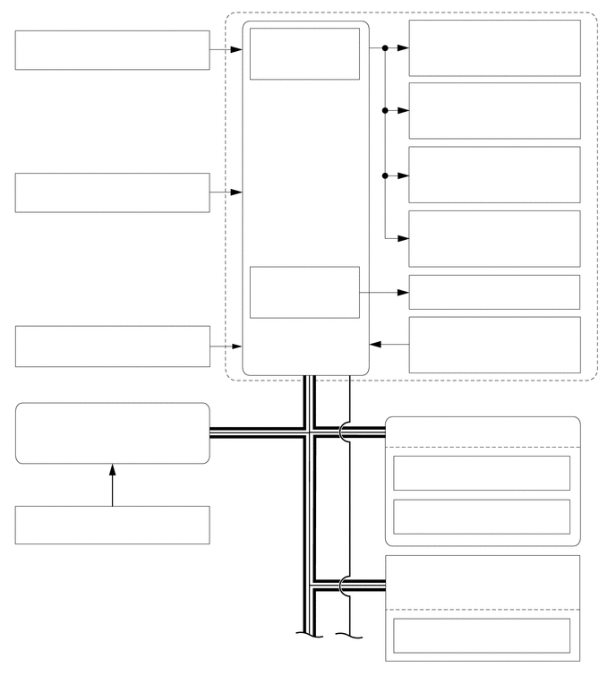

0.688,0.406 3.292,0.604
2.604,0.198
10
false
转速传感器 (4)
0.729,2.063 3.333,2.26
2.604,0.198
10
false
VSC OFF 开关
0.688,3.844 3.292,4.042
2.604,0.198
10
false
刹车灯开关总成
0.26,4.771 2.583,5.354
2.323,0.583
10
false
主车身 ECU（多路网络车身 ECU）
0.708,5.948 2.854,6.281
2.146,0.333
10
false
驻车制动开关总成
2.635,5.146 3.708,5.448
1.073,0.302
10
false
CAN（V 总线）
3.073,0.375 4.24,0.625
1.167,0.25
10
false
电磁阀继电器
3.01,1.854 4.198,2.125
1.188,0.271
10
false
防滑控制 ECU
3.177,3.167 4.073,3.438
0.896,0.271
10
false
马达继电器
5.031,0.281 6.823,0.813
1.792,0.531
10
false
总泵切断电磁阀 (2)
5.063,0.99 6.469,1.531
1.406,0.542
10
false
储液罐切断电磁阀 (2)
5.104,1.76 6.74,2.302
1.635,0.542
10
false
压力保持电磁阀 (4)
5.198,2.521 6.979,3.125
1.781,0.604
10
false
减压电磁阀 (4)
5.333,3.208 6.458,3.542
1.125,0.333
10
false
泵马达
5.167,3.74 6.729,4.156
1.563,0.417
10
false
总泵压力传感器
4.885,4.458 6.635,4.823
1.75,0.365
10
false
制动执行器总成
4.969,4.896 6.531,5.313
1.563,0.417
10
false
空气囊 ECU 总成
5.104,5.333 6.406,5.698
1.302,0.365
10
false
横摆率传感器
5.094,5.875 6.594,6.24
1.5,0.365
10
false
加速度传感器
4.875,6.51 6.51,6.896
1.635,0.385
10
false
带传感器的螺旋电缆分总成
5.146,7.229 6.667,7.615
1.521,0.385
10
false
转向传感器